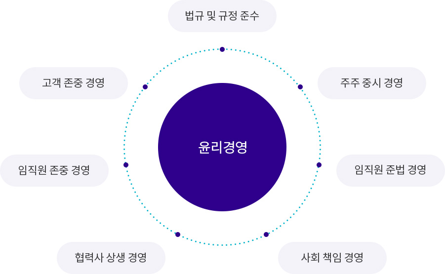

HYOSUNG GOODSPRINGS delivers a variety of news and information.
정도를 지키는 투명한 경영활동을 위해 효성굿스프링스는 ‘윤리강령’을 제정하여 전 임직원이 올바르고 윤리적으로 의사 결정을 내릴 수 있는 기준을 제시하고 있습니다. 효성굿스프링스는 지속적인 노력을 통해 깨끗한 기업문화를 정착하고 Global 기업시민으로서의 사회적 역할과 책임을 다하는 회사가 되겠습니다.

효성 윤리강령 : 2014년 1월 02일 공시
2019년 8월 30일 개정